280 SE · 1982
Linia, która
się nie starzeje.
Manganese Brown Metallic · 480
Oryginalny kolor.
Ten sam odcień, w którym wyjechał z fabryki.

Mercedes-Benz W126 280SE - rocznik 1982

280 SE · 1982
Manganese Brown Metallic · 480
Ten sam odcień, w którym wyjechał z fabryki.